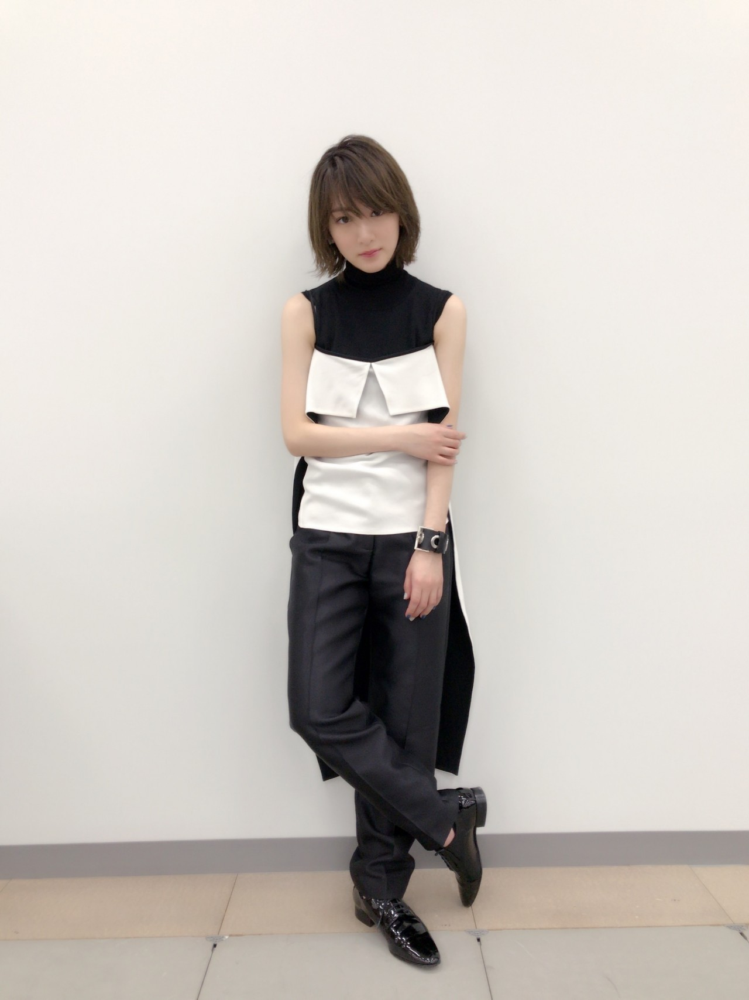

インフルエンサーのMV解禁しましたね〜
MVの時のダンス
カメラマンさんや照明さん、メイク衣装が素敵だからかっこよく見えるけど、
もっと踊り込んでやりたかったなぁと
個人的には課題が残りました。
まりか流石だわ。
私もがんばろう。
これからのテレビなどでの披露の時は
美しく滑らかに動くダンスが出来るようにしないとな！
振り付けの先生の踊り方が
とてもきれているのに穏やかで可愛くてセクシーなんです！！
あれを踊れるようになりたい！
てかならなきゃ！！
よっしゃー！！
そんな私は、
今回のダンスシーンで、
私にしか出せない色気。
をテーマに踊ってました。
乃木坂ちゃんは、
可愛くて、女性の色気出せる子は沢山いるから。
私はそれよりも、
自分にあった色気を武器にしようとしまして、
一瞬一瞬にバランスを考えておりました。
何せ私は鎖骨、二の腕が小学生男子（サッカー部）なのでね、

ジェンダーレスにしました。
まだまだだけど、
男性にも女性にも受ける共通する色気が出たらいいなぁって。
それが魅力に変わるようにするのが目標(*´꒳`*)
ヤンジャンオフショット！
インフルエンサーの衣装の私と、ヤンジャンの私と
印象が違う！
違うのが私らしさ(*´꒳`*)
なんか、見つけた気がします(*´꒳`*)
すっごく美味しいフルーツでスムージー作りたい！
へばなっ☆彡